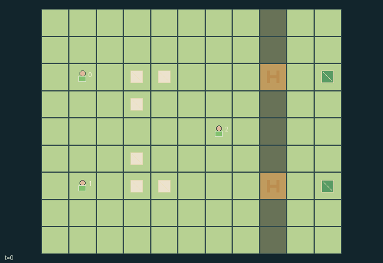

GI129 · Shepherd Circles: Two Gates, One Flock

Original recording scope: 角色视角 · Mode: 固定脚本演示
Additional generated state replay (different trajectory / full-state debug)

Guide all six sheep through timed fence gates into their matching upper or lower pen using combined spatial pressure and temporary calls.
Identity and original contract
3 independently actionable roles; 12 discrete commands per role; 414 native observation columns per role; original horizon 96 steps. Declared per-step reward range: -4 to 8. Observation regime: fully_observable.
Source SHA-256: fb02a8398d479cab6bb8e88e8bba649a6634f2f3b466610071de49e078e2ecc3
The objective, rewards, population, map and horizon remain original. A preview is not a success claim.
Objective and gameplay
Guide all six sheep through timed fence gates into their matching upper or lower pen using combined spatial pressure and temporary calls.
All shepherds' bounded repulsion and call attraction add into the actual cell field. A teammate can reinforce or cancel another's intended pressure, change flock crowding, or consume a gate-opening opportunity. Rest, pressure, call and gate operation compete for time and energy. Gatekeepers help other roles' target flocks at the expense of steering their own.
- Moving gives strength-one pressure within one Manhattan cell. Press costs one energy and gives strength-two pressure within three cells.
- A call costs one energy and attracts within three cells toward a fixed beacon two cells away. It lasts two frames and is replaced by a later call from the same role.
- Sheep use the combined pressure/call vector plus bounded local cohesion when that vector is nonzero. Dominant-axis ties alternate by tick and sheep index.
- Sheep and shepherds cannot enter another live member's old cell. Same-target conflicts use rotating priorities; flock cannot enter shepherd cells.
- Pulling within one cell of a gate costs one energy and sets its timer to three. Fresh pulls affect this tick's flock motion; shepherd movement uses the previously visible gate state.
- Entering any pen resolves a sheep. Matching admissions pay the team; wrong admissions stay recorded and penalize the team.
- The field arrows, call beacons, gate flags and flock positions are native transition state. A future real replay is required for animation and behavior acceptance.
Ending: Every sheep enters either pen, preserving correct and wrong admissions separately; otherwise truncate at 96 nonterminal steps.
What this game explores
Resource commons & externalities: An action changes a persistent resource or burden that another role also encounters. Compare extraction with maintenance and record the downstream resource trajectory.
Joint transport & shared access: Positions, load geometry, occupancy and persistent access constrain whose action can succeed next. Distinguish physical handoff, shared controls and simultaneous force from a cosmetic cooperation label.
These are questions supported by rule structure, not observed learning effects.
Play it: operating walkthrough
crucibles play --game gi129Keep Python running and open its printed address. Select this game, set a seed and press Create session. The game itself is always English.
Assign a role range to Host with Assign / take over, or Assign all roles. Invite a second participant with Create player invitation, then assign a disjoint subset. Every original role is available.
For every owned role choose a legal command and press Queue. Arrow keys / WASD queue a declared directional action for the current role camera when available. Space or Advance one joint step advances everyone together. Non-directional games use the selectors.
Unqueued roles use the labelled untrained uniform-legal policy. Take over or release roles before the next step without resetting. Full-state debug is privileged and permanently logged; role cameras preserve permissions. Close the session to retain logs. Server restart does not restore sessions.
Complete command reference
IDs and English labels exactly match the manifest. Availability depends on role, resources, location and phase. An available action can still have no productive effect.
0·Rest and recover one energy
1·Move north with close pressure
2·Move east with close pressure
3·Move south with close pressure
4·Move west with close pressure
5·Call two cells north
6·Call two cells east
7·Call two cells south
8·Call two cells west
9·Press nearby flock
10·Pull adjacent gate
11·Stay quiet
Roles and capability identifiers
These original role names describe capabilities, not interchangeable skins. Check each owned role's legal selector before planning handoffs.
agent_0·Upper-pen specialist
agent_1·Lower-pen specialist
agent_2·Shared gate and flock coordinator
Information and observation permissions
All entity positions and declared attributes are public. Role identity is self information. Fixed maps, constant labels and redundant derived geometry add no hidden information. Only native observations and legal masks enter a learner.
The GIF is full-state debug and may reveal hidden entities or private state. Train on obs[agent], not the picture, state tree or another role's private row. Field slices and visibility are in the original manifest.
Reinforcement-learning integration
import jax
from crucibles_jaxmarl import make
env = make("gi129")
key = jax.random.PRNGKey(0)
key, rk, ak, sk = jax.random.split(key, 4)
obs, state = jax.jit(env.reset)(rk)
actions = env.sample_actions(ak, state)
obs, state, rewards, dones, info = jax.jit(env.step_env)(sk, state, actions)
done = dones["__all__"]Observations are float32 vectors of width 414; actions are scalar int32; masks have 12 entries. Supply all 3 roles each transition. Masked sampling is an engineering reference, not a trained learner.
step_env retains terminal data without reset. step performs outer autoreset and keeps terminal data in info["raw_state"] and info["raw_observation"]. Use dones["__all__"] for episode boundaries; separate completion, failure and time limit in analysis.
JIT or vmap equal identities and shapes. Split independent reset, policy and transition keys. Group different shapes explicitly; do not shrink the population or horizon. Host rendering stays outside training.
Training questions and fair evaluation
Define valid completion from the objective before fitting. Preserve original rewards and also report real deliveries/services, losses, resource state, unresolved episodes and per-role returns. Animation is not a reward signal.
An action changes a persistent resource or burden that another role also encounters. Compare extraction with maintenance and record the downstream resource trajectory.
Positions, load geometry, occupancy and persistent access constrain whose action can succeed next. Distinguish physical handoff, shared controls and simultaneous force from a cosmetic cooperation label.
Compare memory, communication or centralized critics under matched actor information. Declare critic access; keep actor inputs role-filtered. Match partner/opponent distributions, masks, compute and checkpoint selection. Final tests never enter fitting or selection.
Independent training runs or source-pairing blocks are inferential units; episodes from one policy are not independent training replications. Save hashes, keys, versions, device, time and cost. Negative, zero, failed and indeterminate outcomes are valid. No trained checkpoint or target score is supplied.
Classification and evidence
Overlapping editorial labels are reading aids, not proof of novelty, difficulty, strategic equivalence or learning effects.
- Resource commons & externalities
- Evidence
manifest.task.objective: Guide all six sheep through timed fence gates into their matching upper or lower pen using combined spatial pressure and temporary calls.
- Joint transport & shared access
- Evidence
manifest.task.objective: Guide all six sheep through timed fence gates into their matching upper or lower pen using combined spatial pressure and temporary calls.
- Evidence
manifest.task.interaction: All shepherds' bounded repulsion and call attraction add into the actual cell field. A teammate can reinforce or cancel another's intended pressure, change flock crowding, or consume a gate-opening opportunity. Rest, pressure, call and gate operation compete for time and energy. Gatekeepers help other roles' target flocks at the expense of steering their own.
- Evidence
manifest.actions.10: Pull adjacent gate
Source, receipts and preview limits
The additional generated state GIF replays saved untrained legal actions through the original kernel. At most 25 actual endpoints include initial and terminal state; no invented interpolation. It is full-state debug, not the role observation. Where an original scene preview exists, it is displayed first with its own recorded information scope. The two recordings may use different trajectories and views.
Original source, observation slices, manifest and mechanism
Native receipt · Presentation receipt
Engineering passes do not establish learning. Nonzero floating differences remain recorded and undetermined; no new tolerance was introduced. Human scores remain unverified.